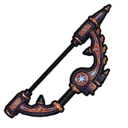

Sacrilege
Bow · Tier 15 · Level 45
This wondrous bow, once sacred, is now merely a shell of its former divine self.
Stats
Attack
1,340
Economy
Value
17,400,000
Crafting time
3d 9h
Merchant XP
355,000
Workers: Carpenter 38, Master 34, Blacksmith 31
Recipe


Blueprint milestones
4
Crafting time -20%
10
-1 Mysterious Fossil
18
Value +25%
25
Unlocks blueprint: Anachron Resolute
40
Quality chance +1